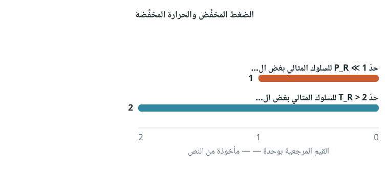

الضغط المخفَّض والحرارة المخفَّضة
Reduced Pressure and Reduced Temperature
الضغط والحرارة مقسومان على قيمتهما الحرجة للمادة: عددا تخفيض يجعل عامل الانضغاطية دالة واحدة فيهما.
الضغط المخفَّض P_R والحرارة المخفَّضة T_R هما الضغط والحرارة مقسومين على قيمتهما الحرجة للمادة: P_R = P/P_c وT_R = T/T_c. وعامل الانضغاطية Z دالة في هذين العددين وحدهما في تقريب المبدأ المقابل لمكوّنين: Z = f(P_R, T_R). وهذا التقريب هو أساس المخطط المعمّم للانضغاطية، حيث تتراكب بيانات غازات كثيرة على منحنى واحد بدل جدول لكل غاز: عند P_R صغير جدًّا يتصرف الغاز كغاز مثالي بغض النظر عن الحرارة، وعند T_R أكبر من 2 يقترب من السلوك المثالي بغض النظر عن الضغط. وفائدة التخفيض أن قراءة الانحراف عن المثالية صارت تعتمد على موقع الحالة من النقطة الحرجة لا على نوع الغاز وحده.
كيف تعمل الظاهرة؟
المبدأ المقابل يفترض أن الغازات الحقيقية تتصرف تصرفًا واحدًا إذا قيست حالتها بموقعها من النقطة الحرجة، لأن الانحراف عن المثالية ينتج عن قرب الجزيئات بعضها من بعض وعن قوة التجاذب بينها، وكلا الأمرين يتحدد بمسافة الحالة عن النقطة التي عندها تتساوى الكثافتان. فإذا قسمنا الضغط على ضغطه الحرج والحرارة على حرارتها الحرجة، صار كل غاز نقطة على خريطة مشتركة، وتُقرأ منها Z في المخطط المعمّم بدل جدول لكل غاز.
العلاقة بالأرقام
للماء P_c = 22.064 ميغاباسكال وT_c = 647.096 كلفن. عند 300 °م أي 573.15 كلفن و1 ميغاباسكال: P_R = 1/22.064 = 0.0453 وT_R = 573.15/647.096 = 0.8857. وكثافة البخار عند هذه النقطة من بيانات NIST 3.8762 كغ/م³، ومنها Z = P·M/(ρ·R·T) = (1×10⁶×0.018015)/(3.8762×8.31446×573.15) = 0.975. والمقارنة بالغاز المثالي: ρ_id = P·M/(R·T) = 3.780 كغ/م³، ونسبتها إلى الكثافة الحقيقية 3.780/3.8762 = 0.975 وهي Z نفسها. ولو رُفع الضغط إلى 10 ميغاباسكال بالحرارة نفسها: P_R = 0.453 وT_R = 0.8857، والكثافة 715.29 كغ/م³، فيصير Z = 0.053 لأن الماء سائل مضغوط لا بخار.
مفاهيم متقاربة
الفرق العملي بين المخفَّض والحرج: الضغط الحرج قيمة للمادة بوحدة الضغط، والمخفَّض نسبة بلا وحدة تساوي الواحد عند تلك القيمة. والفرق بين Z والمخفَّضين أن Z يقيس الانحراف عن قانون الغاز المثالي عند ظرف محدد، وقد يساوي الواحد عند ضغوط منخفضة جدًّا رغم أن P_R ليس صغيرًا بالضرورة عند حرارة عالية. ولا يُستبدل Z بعدد آخر: معامل الانضغاطية لمزيج ليس متوسطًا خطيًّا لمعاملات مكوناته، بل يُحسب بخليط حرجيّ كاذب أو بمعادلة حالة.
حدود التطبيق
المبدأ المقابل لمكوّنين يفشل للجزيئات القطبية والمترافقة كالماء والأمونيا والكحولات، فتحتاج مكوّنًا ثالثًا هو عامل الأسنترية ω في تصحيح بيتزر. ويفشل قرب النقطة الحرجة حيث تنحدر المشتقات انحدارًا حادًّا فيصير الخطأ كبيرًا، ويفشل في المنطقة السائلة حيث يهبط Z إلى 0.05 وهي قيمة لا تقرأها المخططات المبنية على سلوك الغاز. والغازات الكمومية كالهيليوم والهيدروجين تحتاج تصحيح نيوتن لـT_c وP_c. وللمخاليط تُستعمل حرارة وضغط حرجيان كاذبان بقاعدة كاي التقريبية.

| الكمية | القيمة | المصدر |
|---|---|---|
| الضغط الحرج للماء | 22.064 ميغاباسكال | [1] |
| الحرارة الحرجة للماء | 647.096 كلفن | [1] |
| الضغط المخفَّض للماء عند 300 °م و1 ميغاباسكال | 0.0453 بلا وحدة | [1] |
| الحرارة المخفَّضة للماء عند 300 °م | 0.8857 بلا وحدة | [1] |
| عامل الانضغاطية للماء بخارًا عند 300 °م و1 ميغاباسكال | 0.975 بلا وحدة | [2] |
| عامل الانضغاطية للماء سائلًا مضغوطًا عند 300 °م و10 ميغاباسكال | 0.053 بلا وحدة | [3] |
المصادر
- 1 Thermodynamics: An Engineering Approach, 8th ed. — McGraw-Hill Education (2015). · اطُّلع عليه 2026-11-26
- 2 Thermophysical Properties of Fluid Systems — Water, IsoBar P = 1 MPa, T = 573.15 K — NIST — Chemistry WebBook, SRD 69 (2026). webbook.nist.gov/cgi/fluid.cgi?Action=Data&Wide=on&ID=C7732185&Digits=5&RefState=DEF&TUnit=K&PUnit=MPa&DUnit=kg%2Fm3&HUnit=kJ%2Fkg&WUnit=m%2Fs&VisUnit=uPa*s&STUnit=N%2Fm&Type=IsoBar&P=1&TLow=573.15&THigh=573.15&TInc=1 · اطُّلع عليه 2026-11-26
- 3 Thermophysical Properties of Fluid Systems — Water, IsoBar P = 10 MPa, T = 573.15 K — NIST — Chemistry WebBook, SRD 69 (2026). webbook.nist.gov/cgi/fluid.cgi?Action=Data&Wide=on&ID=C7732185&Digits=5&RefState=DEF&TUnit=K&PUnit=MPa&DUnit=kg%2Fm3&HUnit=kJ%2Fkg&WUnit=m%2Fs&VisUnit=uPa*s&STUnit=N%2Fm&Type=IsoBar&P=10&TLow=573.15&THigh=573.15&TInc=1 · اطُّلع عليه 2026-11-26
استشهد بهذا المصطلح
الصيغتان مبنيتان من بيانات الصفحة نفسها: العنوان والتاريخ ورابط النسخة المنشورة.
الضغط المخفَّض والحرارة المخفَّضة — Reduced Pressure and Reduced Temperature. (2026). ديوان المعرفة — انفراد. https://infiradev.com/diwan/terms/term-reduced-properties.html
@misc{term-reduced-properties2026,
title = {الضغط المخفَّض والحرارة المخفَّضة},
titleaddon = {Reduced Pressure and Reduced Temperature},
howpublished = {{ديوان المعرفة — انفراد} — مرجع علمي عربي},
year = {2026},
url = {https://infiradev.com/diwan/terms/term-reduced-properties.html},
urldate = {2026-11-26},
note = {مراجعة علمية: hermes — مراجعة آلية بالتكليف 2026-11-26}
}
راجعه: hermes — مراجعة آلية بالتكليف 2026-11-26 · 2026-11-26 · آخر تحديث 2026-11-26